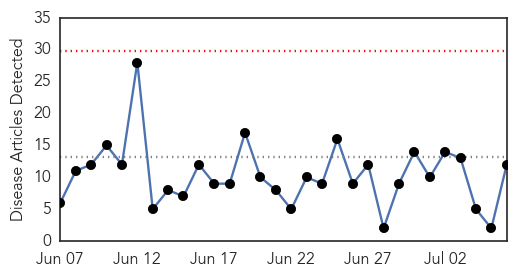
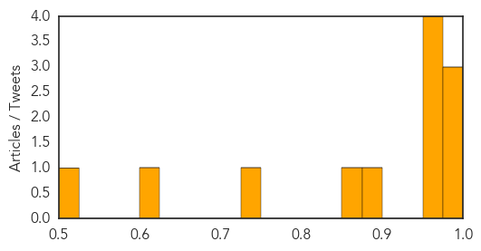
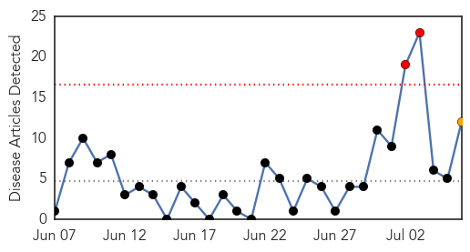
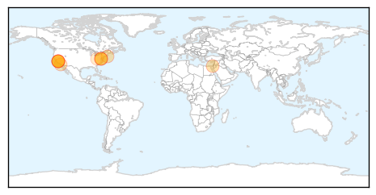
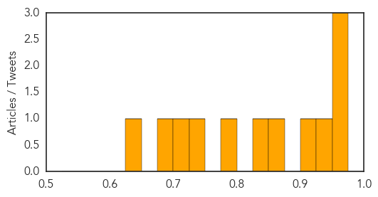

Influenza
30-Day Web Trend
0 alerts, 0 warnings

30-Day Twitter Trend
0 alerts, 0 warnings

Article Locations

Article Confidences
Top Articles:
- 1.000
- when are we most likely to catch viral diseases?
- 0.992
- MERS-positive man arrives from Saudi
- 0.988
- Preventing the Hong Kong flu-INSIDE Korea JoongAng Daily
- 0.963
- Narcolepsy link to GSK’s influenza vaccine
- 0.962
- Experts say avian flu haven’t affectedbirds in Alaska
- 0.960
- donga.com[English donga]
- 0.956
- Hutt Valley District Health Board nurses lag behind other staff for flu shots
- 0.882
- Parliament calls for urgent steps to contain Avian flu
- 0.855
- Netherlands Avian Flu Resulted from Four Separate Introductions
- 0.735
- Western Magazine
- 0.612
- Avian flu hasn't reached Alaska birds yet, but it could
- 0.501
- Sick doctors admit to spreading infections at work
Top Tweets:
-
No tweets found for Jul 06, 2015
Measles
30-Day Web Trend
2 alerts, 1 warnings

30-Day Twitter Trend
0 alerts, 0 warnings

Article Locations
Article Confidences
Top Articles:
- 0.974
- Health Officials Announce the First Measles Death in the US Since 2003
- 0.972
- The US just had its first measles death since 2003
- 0.963
- After Measles Death, More Scrutiny On Anti-Vaccine Sentiments
- 0.943
- Martha's Vineyard Measles Case Was Misidentified; Hospital to Review Protocols
- 0.925
- Martha's Vineyard measles diagnosis was incorrect, CDC said
- 0.857
- Q&A: Seth Mnookin on vaccination and public health
- 0.828
- Measles death in Washington state first in U.S. in a dozen years
- 0.783
- American woman who died of measles was previously vaccinated against measles... total failure of vaccine covered up by quack vaccine propagandists
- 0.741
- First US measles death in 12 years: How was it missed?
- 0.723
- California vaccine law is a healthy measure
- 0.698
- Washington woman's measles death is first in US since 2003
- 0.626
- Gov. Jerry Brown is a 'Corporate Fascist'
Top Tweets:
-
No tweets found for Jul 06, 2015